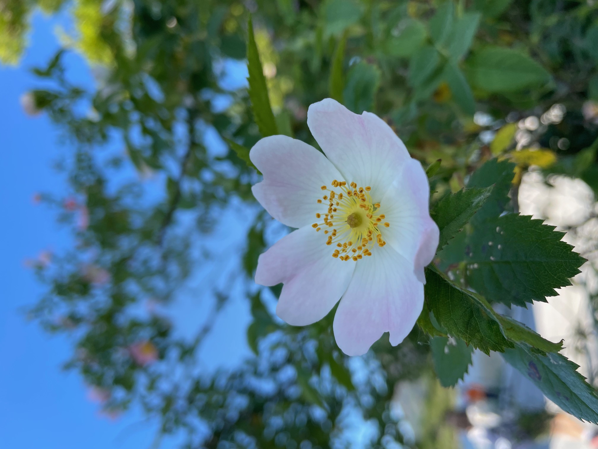

‚ãÖ Àö‚Çä‚Äß êôö Hi, I'm Anna! êôö ‚Äß‚ÇäÀö ‚ãÖ
I'm a high school junior from California, USA ₍ᐢ. .ᐢ₎
I use she/her pronouns, and I'm American, Chinese, and Canadian :P Basically this site should give you a really bad overview of who I am?
Some things I like can be found in Interests.
Feel free to talk to me about anything! Go to Contact :)
Now and Upcoming ùÑú
Some places you might see me at include:
- right now: basically in the bay area?
- June 29-Jul 11, 2025: Canada!
Contact ✉︎
- email: annadeng08[at]gmail[dot]com
- discord: yuppydoodledoo
- linkedin: anna.deng-
- instagram: anna.deng_
- calendly: schedule a call w/ me!
- admonymous: give me feedback!
- let me know if you want to work with me or anything like that! i can provide you my professional (totally) site or full resume or github.
Writing ìÇÉüñä
here's some of my writing on various topics, just for fun. i maintain a substack with currently 1 post on it! wow
here's my very bad learning log where I record fascinating things I've learned periodically (hopefully :D) i journal a lot and have some other writing thingz so dm me if you're curious. oh! if you're curius! (insert winking emoji)
Interests ñπ≠
math and cs stuff ℼ ⌨
my favorite math subjects are algebra and number theory. numbers are beautiful and number theory results are so powerful. lately i've been getting more into abstract algebra. i have a huge stash of interesting math books that i need to read! in the distant past i've also touched on analysis and topology and taken sneak peeks into diff geo. there is genuinely so much interesting math out there, and i've barely touched the surface.
books: aluffi's notes from the underground, axler's linear algebra done right, princeton's companion to mathematics and applied mathematics
i'm also sorta a comp math person even though i'm a bit retired. math contests are fun though, and i attend many college tournaments. feel free to send me problems but you should understand that i'm pretty rusty oops.
also if you're a girl in STEM please check out INTEGIRLS and INTEGIRLS Bay Area! i'm involved with these two and i hope being a part of the INTEGIRLS community will motivate you to continue your math pursuits as much as they did for me! sign up for their mailing lists and participate in the competitions! i assure you that you will have a lot of fun! you should also check out athemath :)
i've also gotten a bit into applied math stuff and mathematical modeling. i feel like i have trouble implementing theory sometimes, so doing math modeling contests is a great way to execute that skill. i've also taken physics every year in hs and it's my favorite out of the "empirical" sciences. there's so much of the universe left to be understood.
for cs i'm mainly into ml stuff, and recently llms? i guess my "journey" started off by watching 3blue1brown vids followed by some attempts to learn basic algorithms. now i like reading interesting papers (reading academic writing takes practice) and ai tech content on various platforms (stuff on substack is rlly good, along with these quanta articles). what is very exciting to me is how we can use ai to advance mathematically, like ai+lean workflows. a very recent development on alphaevolve basically does this, advancing progress in the kissing number problem. another cool subsection of ai is in mechanistic interpretability. since ai has increasingly become intertwined with our lives, i think it's important to understand it better! and besides, if ai can write code now, we should focus on coding for ai instead of doing what ai can already do. hopefully i can get more into ai safety stuff :O
figure skating ₊˚｡❆
i've been skating for... 11 years now! i have all my doubles other than double axel :) i compete in excel and showcase, and i've passed my pre-gold tests in both singles and skating skills. i used to do toi and i also am on a hs skating team. i'm injured a lot oops
making the world a better place (mwab) ‚ÇäÀö ö ‚ÇäüåéÀö‚úß Ôæü.
this is one of my career goals in the long term. the impact of my work is very important to me, whether it's liking everyone's instagram stories (lol), volunteering my time, or performing research in things that matter!
my personal philosophy isn't really solidified but there are bits and pieces that are important to me, and this underlies a substantial part of those pieces i guess?
reading and yapping êôö‚Äß‚ÇäÀöüìú‚ú© ‚ÇäÀö‚äπ‚ô°
uhh one of my goals is to read more! and talk to more people! so please talk to me :D will be hopefully updating this section.
most recent book i read was tenth of december: stories by george saunders. i found "victory lap" very thought-provoking...
please recommend things i like to be carried away
goodreads: profile
listening to music ↻ ◁ || ▷ ↺
i am a very avid music listener!!! particularly pop (k-pop!) and r&b
new releases:
- nerdy by ifeye
- only cry in the rain by chuu
releases from a while that are good:
- feel it by d4vd
- girl front by loona / odd eye circle
- honeybee by chuu
- flowers by aespa
nascent hobbies and the miscellaneous ñ°é
i guess i language-learn through duolingo? i'm doing french, spanish, and some korean. here's my account. the reason i'm reluctant to include this as a main interesting is because i'm nowhere as proficient as my progress seems to show. but in the future i definitely hope i can get better at these languages and be able to understand/speak them!
i also periodically sketch things from pinterest. totally not because it's part of my ceramics class hw. but to be fair sketching is fun!
ah yes, i'm taking ceramics so i make things. they're not the best but um
here's my first pinch pot
here are two pinch pots and a mug and a sunflower and a grapevine thing
all the stuff i made for the year! minus capybaras, they'll come soon TM

here are the capybaras yay
i like cats. i feed three strays :) this one is also my schoology profile picture haha
i also like food. for your pleasure here's a fruit crepe and a totoro-themed bakery in boston called japonaise bakery
finally i like flowers and nature. here are some pretty pictures i took from ireland
bucketlist
- cooking/baking
- driving
- webdev
- modular origami
for all the interests i have that have not come to fruition
abandoned hobbies
i had a phase of crocheting. maybe i should pick that up again but i'm not the most deft. the hooks and yarn are still sitting untouched.
- i used to actually take art somewhat seriously.
- i used to play piano. i did not like it which is why i stopped.
- i used to dance competitively. there's a video of my 4th grade competition group dance somewhere on youtube
- i used to swim.